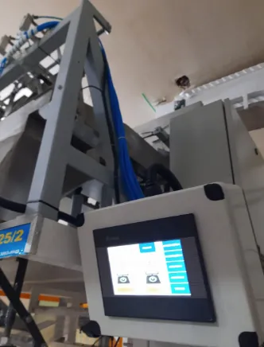
Automação industrial
Modernizamos máquinas e equipamentos com tecnologia de automação para elevar o desempenho e a produtividade da sua linha de produção.
Jaraguá do Sul - SC · desde 2009
Desenvolvemos soluções de automação para indústrias de diferentes portes. Com tecnologia e inovação aplicadas à produção, ajudamos nossos clientes a aumentar a produtividade e a acelerar o retorno do investimento.
Solicite um orçamentoConheça alguns dos projetos que desenvolvemos para a indústria.
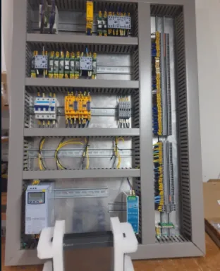
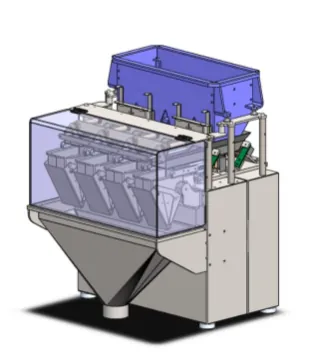
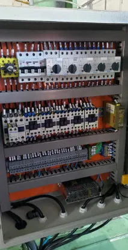
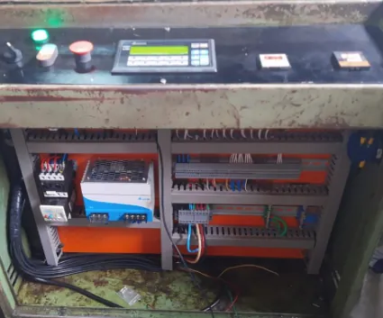
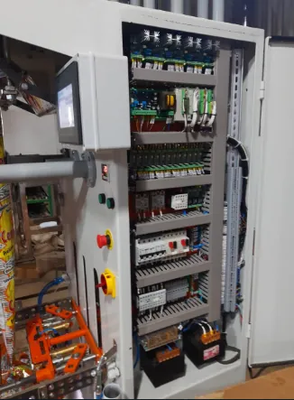
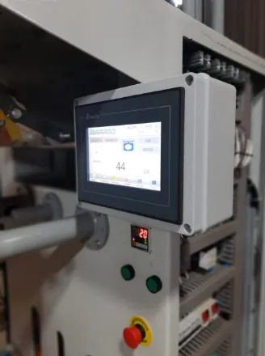
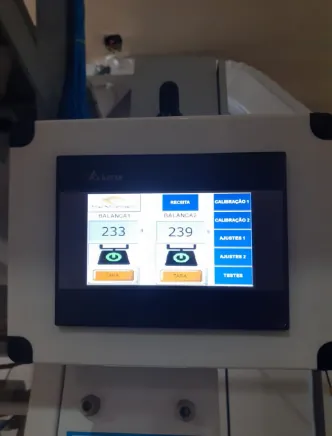
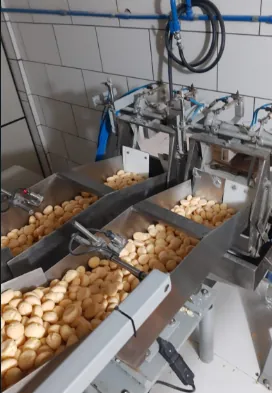
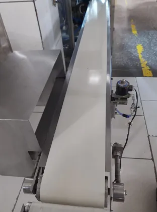
Desde 2009, a Sasse Automação é especializada em automação industrial e manutenção eletroeletrônica, atendendo empresas de diferentes portes e segmentos.

Modernizamos máquinas e equipamentos com tecnologia de automação para elevar o desempenho e a produtividade da sua linha de produção.
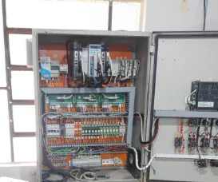
Diagnóstico e reparo de equipamentos com defeito ou mau funcionamento, com substituição de componentes obsoletos para prolongar a vida útil do seu parque industrial.
Fundada em 2009 por Gabriel Henrique Sasse, em Jaraguá do Sul - SC, a Sasse Automação atua em eletroeletrônica e na automação de máquinas e equipamentos.
Ao longo dessa trajetória, agregamos valor a empresas de diferentes portes e segmentos, entregando soluções que tornam a produção mais eficiente e confiável.
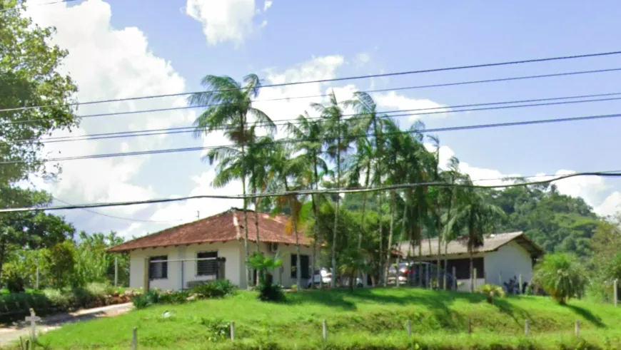
Fundador
Natural de Jaraguá do Sul - SC, Gabriel é técnico em eletrotécnica e atua na área desde 2006. Com a experiência acumulada na indústria, fundou a Sasse Automação em 2009.
Conheça o perfil no LinkedInSolicite um orçamento ou agende uma visita técnica. Retornamos o contato para entender a necessidade da sua empresa.
Falar pelo WhatsApp